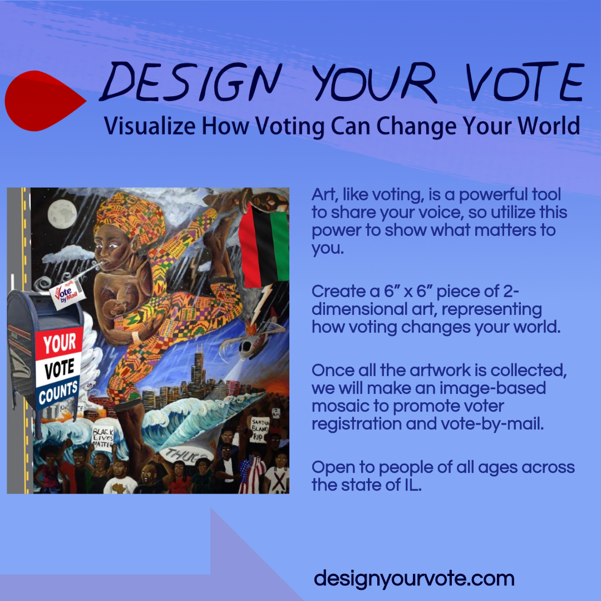
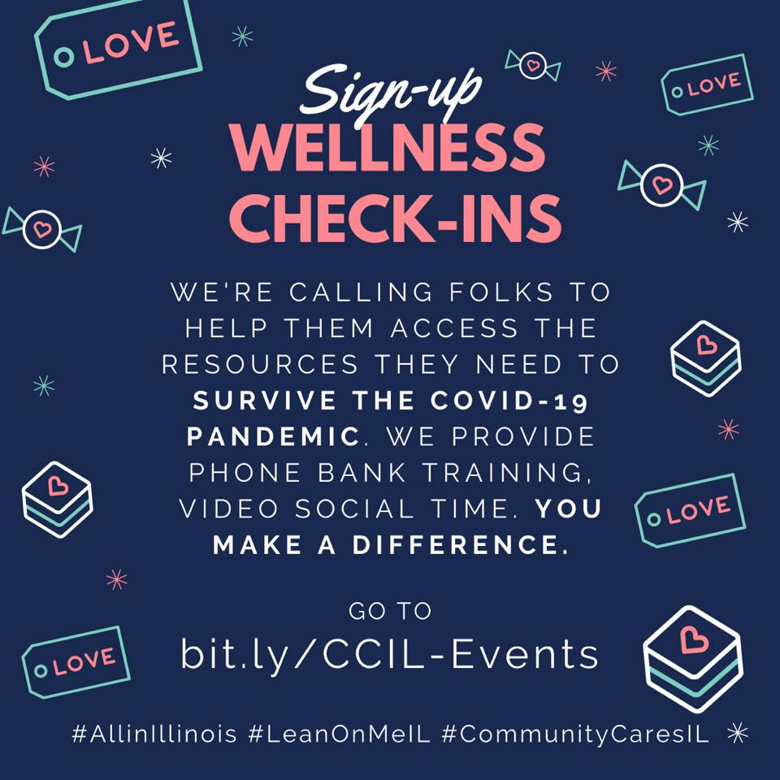
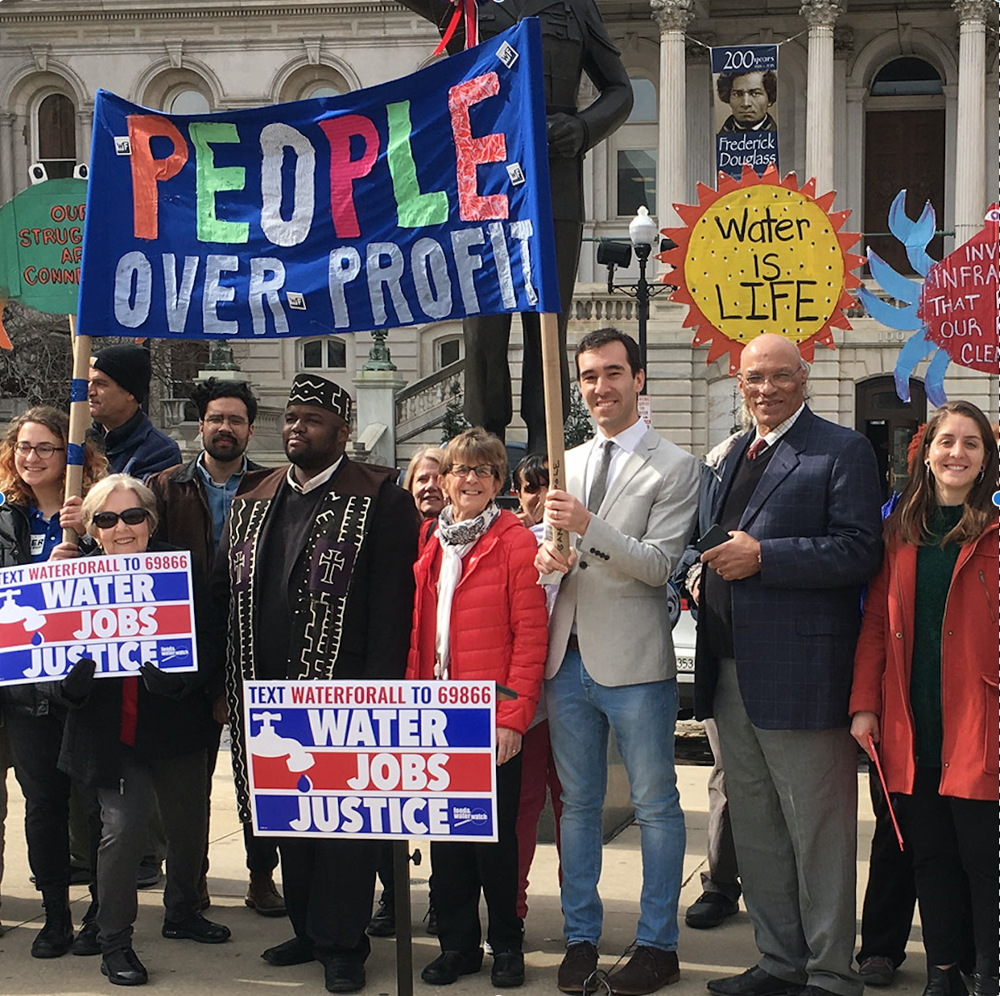
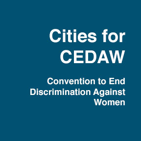

Current Initiatives
When we work together, we can accomplish so much more. Check out the current initiatives that She Votes Illinois supports and how you can take action to effect change.

Join She Votes Illinois, community organizers, activists, and artists on a community art project “Design Your Vote” to creatively express yourself and to energize Illinoisans to vote safely in the November 2020 election.
Design Your Vote is an art project geared towards Illinois residents of all ages in order to spread voting awareness, specifically by vote by mail. People of every artistic skill level are welcomed and encouraged to participate by sharing their artwork that responds to the prompt “How voting can change my world.” Submissions are being collected through October 14th, at which point they will be used to create a mosaic art piece to further spread voting awareness.
Check out our website designyourvote.com for more info about this fun and free project! Fun for the whole family!

While most cases of COVID-19 cause a mild illness, the virus is spreading easily from person to person and this puts entire communities at risk. And as the virus continues to spread, the high mortality rate for black residents is alarming while the Latino community is underreported and ignored. For people over 60 years of age, the risk of contracting COVID-19 increases significantly and escalates with age, with persons over age 80 in the highest risk category.
Everyone has a role to play in this. That’s why we’re partnering with community organizers to check in on residents in some of the hardest hit areas of Cook County during the coronavirus pandemic.
Sign up with us to do wellness check-ins with our Community Cares IL coalition right from your own home! This is a great opportunity to help people in need. We’ll send you everything you need–training documents, FAQs, and a link to get started calling right away! To register for this event, visit our calendar of events and RSVP for a virtual phone baking session on the date and time that works for you!

As more Illinoisans face job loss as a result of the COVID-19 crisis, inability to pay for water is becoming more common. Homes that had previously lost service due to nonpayment have not had their water reconnected, making it impossible to follow the most basic and consistent advice of the CDC: wash your hands.
While Governor Pritzker has issued a moratorium on shut-offs for investor-owned companies, many are still vulnerable to municipal water shut-offs. Now is the time for Congress to comprehensively assure residents that water will be supplied during this unprecedented crisis.
The pandemic is disproportionately affecting low-income communities. Those who have lost income due to the pandemic are being deprived of a basic and necessary human right. The most widely endorsed strategy to prevent coronavirus is to wash hands frequently. But for millions of people in our country, this task is more difficult than you can imagine — because their water has been shut off. We all deserve access to clean water in order to take the necessary measures to keep ourselves and our communities safe.
Join She Votes Illinois and other organizations led by Food & Water Action to urge your Senator to support the Emergency Water is a Human Right Act (S. 4362) and passing a national moratorium on water shutoffs.

She Votes Illinois has partnered with the United Nations Association of Chicago along with other local organizations with an objective to have the City of Chicago pass a resolution to ratify and implement CEDAW, the Convention on the Elimination of all forms of Discrimination Against Women.
CEDAW is the international bill of rights for women and is a comprehensive treaty that addresses issues like education inequality, employment discrimination, healthcare choices, political participation, equal rights, gender discrimination, economic and social protections, equal access to opportunities, rights in marriage and home life, and human trafficking.
To learn more about this initiative and to take action, visit https://unachicago.org/advocacy/
“Despite Congress having the most women and people of color than ever before, women are still fighting for parity. Your donation will help She Votes Illinois continue our work to support the growth of political power for women."
- Annie Williams, Board Member